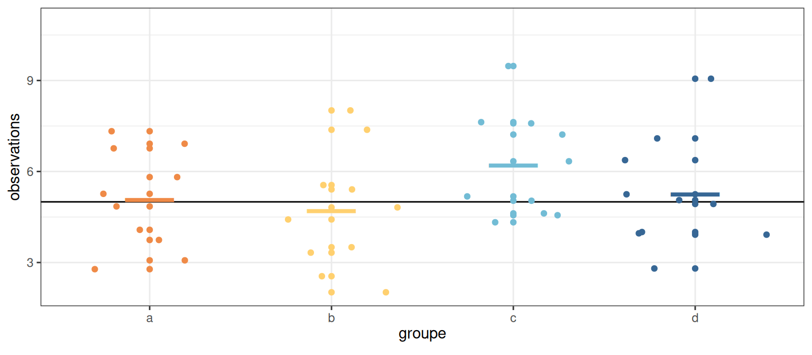

Probabilités et statistique
Atelier parallèle - CanCOTS
Léo Belzile, HEC Montréal
mardi 10 juin 2025
Cours de Probabilités et statistique
La réforme de 2021 au collégial a ajouté le cours de Probabilités et statistique comme cours obligatoire du cursus de Sciences de la nature.
Objectifs spécifiques
Objectifs spécifiques
Évolution du cours
Aucune modification depuis des décennies?
- La science des données est en vogue.
- Les données (et leur collecte) sont devenues omniprésentes (moins de sondage, plus de collecte en ligne).
- Les langages (et logiciels) de programmation libre accès (R Python, etc.) se sont démocratisés. Certains programmes préuniversitaires ont des cours de programmation.
- Certaines notions (statistiques descriptives) sont désormais au programme du secondaire.
Rapports GAISE
American Statistical Association (2016), Guidelines for Assessment and Instruction in Statistics Education (GAISE) College Report, Alexandria, VA: American Statistical Association. hyperlien, 2e édition.
L’ébauche d’une troisième version est disponible en ligne.
Recommendations du GAISE
- Enseigner la statistique et la science des données comme des processus itératifs permettant de tirer des enseignements des données afin d’éclairer les décisions fondées sur des preuves.
- Mettre l’accent sur une communication écrite et orale effective des résultats obtenus à partir des données, en prêtant attention à la portée et aux limites des conclusions.
- Se concentrer sur la compréhension conceptuelle plutôt que sur la manipulation algébrique et les formules.
Recommendations du GAISE
- Intégrer des données réelles avec un contexte et un objectif tout au long du cours. Sélectionner des données significatives et attrayantes pour les étudiants.
- Encourager la réflexion multidimensionnelle.
Recommendations du GAISE
- Incorporer des logiciels/applications pour explorer des concepts et travailler avec des données.
- Insister sur la conduite responsable et éthique dans la collecte et l’utilisation des données et dans leur analyse.
Recommendations du GAISE
- Employer des méthodes pédagogiques fondées sur des données probantes qui engagent activement les étudiants dans le processus d’apprentissage.
- Utiliser une variété d’évaluations formatives et sommatives pour améliorer l’enseignement et l’apprentissage.
- Mettre en oeuvre une conception de cours qui utilise des stratégies inclusives pour favoriser un sentiment d’appartenance.
Science des données
La plupart des concepts enseignées ne semblent pas reliés dans les ouvrages de référence.
- les statistiques descriptives et les graphiques / visualisation servent dans l’analyse exploratoire.
- les statistiques descriptives sont des estimateurs et servent à la constructions de tests.
- les lois de probabilité interviennent souvent dans la loi d’échantillonnage de statistiques (tests-\(t\) ou \(\chi^2\)) ou pour le calcul de valeurs-p (combinatoire), ou pour des variables réponses.
Concepts fondamentaux pour l’inférence
Les statistiques de tests sont toutes construites selon les mêmes principes.
Le principe clé sous-jacent est la comparaison de modèles
- choisir un modèle pour les données
- formuler une hypothèse nulle et alternative
- estimer le modèle sous l’hypothèse nulle \(\mathscr{H}_0\) et alternative \(\mathscr{H}_a\)
- calculer une statistique standardisée (résumé de la preuve)
- comparaison avec un étalon de mesure (loi d’échantillonage sous \(\mathscr{H}_0\))
- transformation à l’échelle uniforme (valeur-\(p\)) et conclusion
C’est difficile au niveau collégial parce que les modèles considérés sont souvent implicites (par exemple, la régression de Poisson pour tableaux de contingence).
Inférence basée sur la simulation
Cobb, G. W. (2007). The Introductory Statistics Course: A Ptolemaic Curriculum? Technology Innovations in Statistics Education, 1(1). DOI:
10.5070/T511000028
Mine Çetinkaya-Rundel and Johanna Hardin (2024). Introduction to Modern Statistics, 2e édition, https://www.openintro.org/book/ims/
Concepts clés 1
- Compréhension de l’incertitude et de la notion d’aléatoire d’un test d’hypothèse
Une statistique est une fonction des données (supposée ici unidimensionnelle).
- si on prend comme intrant un échantillon aléatoire simple tirée d’une population commune, la sortie est aussi une variable aléatoire.
Concepts clés 2
La moyenne d’un échantillon est moins variable qu’une observation tirée au hasard
- L’information s’accumule à un rythme linéaire si les données sont indépendantes.
- La variance diminue par un facteur équivalent à la taille de l’échantillon, \(n\).
Cohérence d’estimateurs
Outre le théorème central limite, la loi des grands nombres joue un rôle clef.
Variabilité de la moyenne
Concept clé 3
Éviter le plus possible le catalogue de statistiques!
Arbre de décision, tirée de McElreath (2015), Figure 1.1.
Statistique de Wald
La plupart des statistiques appartiennent à une famille.
L’exemple canonique, la statistique de Wald, est omniprésente (test-\(t\), proportions, coefficient de régression linéaire, corrélation, etc.)
Pour un paramètre \(\theta\) donné \[\begin{align*} W = \frac{\text{estimation} - \text{valeur postulée}}{\text{erreur-type (estimation)}} = \frac{\widehat{\theta} - \theta_0}{\mathsf{se}(\widehat{\theta})}. \end{align*}\]
En moyenne…
Si la statistique est une moyenne et qu’on peut appliquer le théorème central limite, alors une approximation normale est valide en grand échantillon.
Le nombre \(n=30\) n’a rien de magique: l’approximation est typiquement aussi bonne pour \(n=29.\)
Ce résultat est valide sous des conditions très générales et est facile à représenter visuellement avec des animations (applet).
Distribution quelconque
Données de durée de trajet pour TGV entre Madrid et Barcelone.
Figure 1: Distribution empirique des temps de trajet de TGV.
Théorème central limite en image

Figure 2: Représentation graphique du théorème central limite (20 obs), avec moyennes de \(n=5\), et \(n=5, 20, 100\) observations.
Erreur-type
En pratique, il convient de standardiser l’estimateur en le divisant par son erreur-type.
Rappel: la statistique est une variable aléatoire!
Si on considère des données indépendantes d’une population de moyenne théorique \(\mu\) et de variance \(\sigma^2\), alors l’erreur-type de la moyenne est \(\sigma/\sqrt{n}\).
Cas spécifiques
La variance est inconnue, il faut donc l’estimer.
- Si on utilise une distribution pour laquelle la variance est une fonction de la moyenne (loi binomiale avec probabilité de succès \(p\)), alors on sait que \(\sigma^2=p(1-p)\) et on utilise \(\widehat{p}\), la proportion empirique.
- Sinon, on peut remplacer \(\sigma^2\) par une estimation sans biais de la variance, \(s^2.\)
- Plus généralement, avec la méthode du maximum de vraisemblance, on obtient les erreurs-type à partir de la matrice d’information.
Statistiques et loi d’échantillonnage
La loi nulle asymptotique est la loi d’échantillonnage de la statistique quand notre hypothèse nulle est vraie.
Cela correspond typiquement à un modèle duquel on peut simuler des observations.
- par exemple, dans un test-t pour deux échantillons, on peut permuter les libellés de groupes. Voir l’article interactif sur le test de permutation de Jared Wilber.
Intervalles de confiance
- Si on calcule un intervalle de confiance pour un échantillon donné, la vraie valeur (inconnue) du paramètre \(\theta\) est soit dans l’intervalle de confiance, soit pas: il n’y a pas de notion de probabilité!
- Le terme confiance s’applique à la procédure que l’on utilise pour calculer l’intervalle, et non pas dans les valeurs des bornes obtenues pour un échantillon en particulier.
- Si on répète l’expérience plusieurs fois, et qu’on calcule un intervalle de confiance de niveau \(1-\alpha\) à chaque reprise, alors en moyenne une proportion de \(1-\alpha\) des intervalles contiendra la vraie valeur de \(\theta\) parmi toutes les répétitions.
Propriétés fréquentistes des intervalles de confiance
Figure 3: Intervalles de confiance à 95% pour la moyenne d’une population normale standard pour 100 échantillons aléatoires. En moyenne, 5% de ces intervalles (en rouge) n’incluent pas la vraie valeur de la moyenne de zéro.
Inférence basée sur la simulation
En général, il faut pouvoir programmer pour faire les calculs. Personne ne fait des statistiques à la main!
Dans les programmes comme Sciences, informatique et mathématique, il est probablement plus facile d’incorporer Python, R ou un autre outil.
Applet
- Ressources créées par l’équipe de l’UBC:
statspace.elearning.ubc.ca - Applications Shiny
- Collection de Rossman/Chance
- Introduction to Statistical Investigations
- Distributions SOCR
La plupart ne sont malheureusement disponibles qu’en anglais.
Processus itératif
Exemple: suggestion de montants de dons
Moon, A. et EM VanEpps (2023). Giving Suggestions: Using Quantity Requests to Increase Donations, Journal of Consumer Research, 50(1), 190–210. doi:10.1093/jcr/ucac047
À travers sept études, nous fournissons des preuves qu’offrir des choix multiples lors de sollicitation pour des dons (par ex., 5$, 10$, 15$) augmente le montant moyen des dons comparativement à une question ouverte.
Données de l’étude 1
Les données colligées sur \(n=869\) participant(e)s incluent les variables suivantes:
avant: un indicateur binaire qui indique si la personne a déjà donné à l’organisme de charité par le passédon: indicateur binaire si dongroupe: groupe expérimental, soit question ouverte ou quantité fixe suggéréemontant: montant du don (en dollars), valeur manquante sidon=0(min 0, max 25).
Rétro-ingénierie: quelles questions scientifiques pouvez-vous envisager poser avec ces variables?
Visualisation: histogramme du montant des dons
Qu’est-ce que la visualisation révèle?
Tableaux de contingence
| non | oui | |
|---|---|---|
| ouvert | 140 | 267 |
| fixe | 95 | 367 |
| non | oui | |
|---|---|---|
| non | 113 | 238 |
| oui | 122 | 395 |
Résultats de deux tests d’indépendance
Le test de Fisher utilise le rapport de cotes comme statistique de test. Si l’on suppose que les décomptes (lignes/colonnes) sont fixes, un argument combinatoire donne une loi hypergéométrique pour la loi d’échantillonnage.
##
## Fisher's Exact Test for Count Data
##
## data: tab1
## p-value = 6e-06
## alternative hypothesis: true odds ratio is not equal to 1
## 95 percent confidence interval:
## 1.48 2.78
## sample estimates:
## odds ratio
## 2.02Test du khi-deux
Le test du khi-deux (sic) utilise une approximation khi-deux à un degré de liberté.
##
## Pearson's Chi-squared test
##
## data: tab1
## X-squared = 21, df = 1, p-value = 5e-06Les statistiques et les valeurs-p diffèrent! Est-ce important?
Comparaison des revenus
On peut faire un test-t pour deux échantillons indépendants pour comparer les revenus.
##
## Two Sample t-test
##
## data: montant by groupe
## t = -4, df = 867, p-value = 2e-04
## alternative hypothesis: true difference in means between group ouvert and group fixe is not equal to 0
## 95 percent confidence interval:
## -2.945 -0.914
## sample estimates:
## mean in group ouvert mean in group fixe
## 6.77 8.70Conclusions et limitations de l’étude?
Test de permutation et autoamorçage
library(infer)
ttest <- dons |> t_test(formula = montant ~ groupe,
order = c("ouvert", "fixe"))
null_dist <- dons |>
specify(montant ~ groupe) |>
hypothesize(null = "independence") |>
generate(reps = 1000, type = "permute") |>
calculate(stat = "t", order = c("ouvert", "fixe"))
visualize(null_dist) +
shade_p_value(obs_stat = ttest, direction = "two-sided") +
theme_classic()Tests A/B et titres des nouvelles

Upworthy.com, un éditeur de médias américain, a révolutionné la publicité en ligne en effectuant des tests A/B systématiques pour comparer les différentes formulations des titres, l’emplacement du texte et de l’image afin de déterminer ce qui attire le plus l’attention.
Les archives d’Upworthy contiennent les résultats de 22743 expériences, avec un taux moyens de clics de 1.58% (écart type de 1.23%).
Titres d’articles
Voici les résultats d’un test A/B du 23 novembre 2014 qui comparait quatre titres pour un atelier de Sesame Street. L’épisode traitait d’enfants dont les parents étaient incarcérés en prison, où ils les visitaient. Les quatre choix considérés étaient:
- Some Don’t Like It When He Sees His Mom. But To Him? Pure Joy. Why Keep Her From Him?
- They’re Not In Danger. They’re Right. See True Compassion From The Children Of The Incarcerated.
- Kids Have No Place In Jail … But In This Case, They Totally Deserve It.
- Going To Jail Should Be The Worst Part Of Their Life. It’s So Not. Not At All.
Tests A/B: exemple de Sesame street
| titre | vues | clics |
|---|---|---|
| H1 | 3060 | 49 |
| H2 | 2982 | 20 |
| H3 | 3112 | 31 |
| H4 | 3083 | 9 |
Méthodes de rééchantillonage
Le traffic est redirigé de manière aléatoire: on pourrait vérifier la répartition des 12 237 vues avec un test d’ajustement.
- On calcule la statistique de test \(T\) sur l’échantillon.
- Sous \(\mathscr{H}_0\), cela revient à simuler des tirages d’une loi multinomale avec \(p=(1/4, 1/4, 1/4, 1/4)\). Pour chaque tirage du modèle, on recalcule la statistique. On répète \(B\) fois.
- On compare les résultats: la valeur-p est estimée par la proportion empirique des \(B\) simulations qui excèdent \(T\).
Code pour Monte Carlo
Code
B <- 1000L # nombre de simulations Monte Carlo
vues <- c(3060L, 2982L, 3112L, 3083L)
total <- sum(vues) # décompte total
# Fonction calculant la statistique de test
stat_khideux_unif <- function(
x, # vecteur de décomptes
prob = rep(1/length(x), length(x)), # probabilité postulée
n = sum(x)) # décompte total
{ # E = n*prob, O = x
sum((x - n*prob)^2/(n*prob)) # statistique du score
}
# On remplace l'approximation khi-deux avec 3 ddl
# par une approximation Monte Carlo
loinulle <- numeric(B) # contenant
test <- stat_khideux_unif(vues) # stat avec données originales
# Tirages sous H0
for(i in 1:B){
x0 <- c(rmultinom(n = 1, size = total, prob = rep(0.25, 4)))
loinulle[i] <- stat_khideux_unif(x0)
}
# Probabilité sous H0 d'obtenir un résultat plus grand?
# remplacée par proportion empirique
mean(loinulle >= test)
## [1] 0.377Questions plus générales
On peut estimer le taux de conversion (clics/vues) par la proportion empirique.
prop <- with(abtest, clics/vues)
nvues <- 1000 # nombre de vues
B <- 1e4L # nombre de simulations Monte Carlo
res <- cbind(
rbinom(n = B, size = nvues, prob = prop[1]),
rbinom(n = B, size = nvues, prob = prop[2]),
rbinom(n = B, size = nvues, prob = prop[3]),
rbinom(n = B, size = nvues, prob = prop[4]))
# Probabilité que le titre i génère plus de clics
# avec 1000 vues
table(apply(res, 1, which.max))/B
##
## 1 2 3
## 0.8973 0.0117 0.0910
# On peut obtenir un intervalle de confiance
# (ce sont des moyennes)!À vous de jouer
On vous propose de travailler avec nous
- l’incorporation de jeux de données thématiques,
- l’introduction aux langages de programmation pour la réalisation de tests et les calculs,
- l’utilisation de simulations et d’applications interactives pour illustrer les concepts et résultats
- la construction de bases d’exercices (interactifs ou papiers).
Données ouvertes
- Sites gouvernementaux: Données Québec, Statistique Canada, data.gov.uk
- Répertoires de partages de données d’articles scientifiques: ResearchBox, OSF
- Données distribuées avec paquets R
Rdatasets
Les données plus récentes ou réalistes nécessitent un prétraitement ou nettoyage.
Logiciels
- R
- Python via statmodels
- Jamovi
- JASP